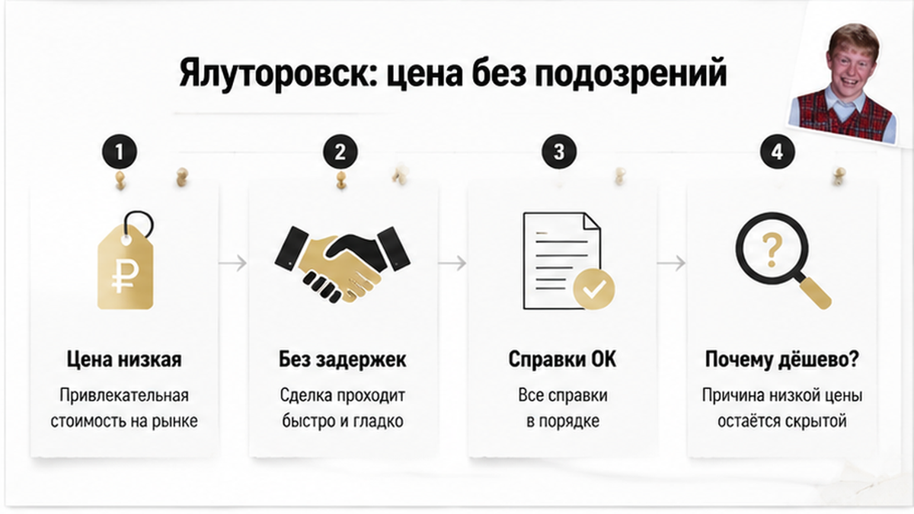
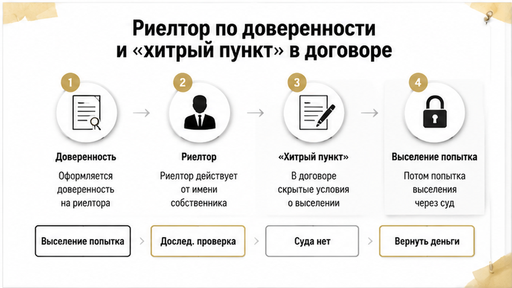
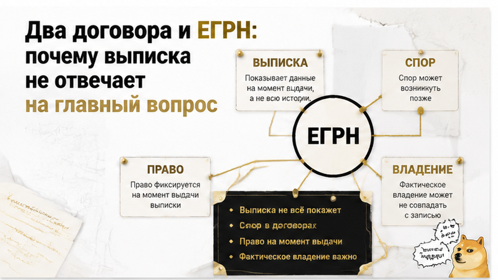
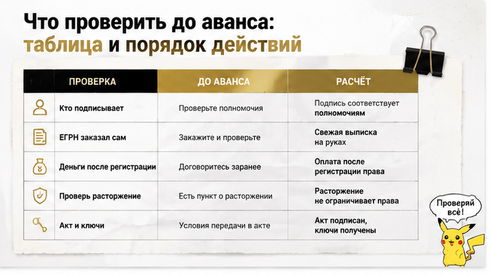

Квартиру купили один раз. А продали — дважды.
История, о которой 22 июня 2026 года рассказало URA.RU, начиналась предельно буднично: жительница Ялуторовска подобрала квартиру, цена показалась привлекательной, сделка прошла гладко, справки и документы покупательница получила на руки. Тревожных сигналов на входе не было — по крайней мере таких, которые обычный человек читает без юриста. Примерно через год выяснилось, что у той же квартиры есть второй покупатель и второй договор, а продавец, по версии защиты, оставил жильё тому, кто предложил сумму побольше. Сейчас, как рассказал изданию юрист Роман Матвеев, представляющий интересы первой покупательницы, органы предварительного следствия проводят проверку, а его клиентку «реально пытаются выселить из собственного жилья». Суда по этому спору ещё не было — и это, пожалуй, самое неприятное в казусе: человек уже живёт в режиме неопределённости, хотя формально не нарушил ничего.
Я Святослав Шакин, риелтор из Тюмени. Разбираю такие сюжеты не для того, чтобы напугать вторичкой, а чтобы показать точку — то место сделки, где у покупателя ещё была возможность что-то изменить.
Разбираю тюменские сделки и подобные казусы по документам, без страшилок. Готовите покупку на вторичке — напишите, посмотрю вашу ситуацию.
Telegram: @Tyumen_Rieltor · MAX: Святослав Шакин, The Риэлтор — Тюмень.

Как следует из публикации URA.RU, первая покупка подозрений не вызывала вообще. Цена привлекательная, сделка без задержек, справки и документы на руках. Внешне — нормальная сделка на вторичке, каких в Тюменской области сотни в месяц.
И вот здесь я всегда прошу клиента притормозить. Привлекательная цена сама по себе не преступление: люди продают срочно, разъезжаются, уезжают, закрывают долги. Но привлекательная цена — это всегда вопрос «почему», а не «повезло». В моей практике заманчивый дисконт почти всегда чем-то оплачен, просто покупатель узнаёт об этом позже: скидку в два миллиона обещали, а в квартире прятали риск — та же логика, только риск был другой природы.
Что важно проговорить про ялуторовский казус сразу. Адрес, суммы, фамилии участников, номер материала проверки в открытых источниках не названы. Мы не знаем ни цены квартиры, ни того, как передавались деньги, ни что сейчас записано в ЕГРН. Есть публикация издания и комментарии представителя одной из сторон — всё. Поэтому дальше я разбираю не «кто виноват», а конструкцию сделки: она типовая и повторяется где угодно, включая Тюмень.
И ещё деталь, которая усыпляет надёжнее любых уговоров: гладкость. Когда всё быстро, без нервов и без встречных вопросов другой стороны, покупатель расслабляется. А ведь именно в спокойной сделке сложнее всего заметить, что параллельно кто-то ведёт переговоры с другим покупателем.
По версии, изложенной Романом Матвеевым в материале URA.RU, примерно через год после покупки выяснилось: эту же квартиру перепродали другому человеку — по более высокой цене. У одного объекта оказалось два покупателя и, по документам, изученным защитой, две сделки.
Год — ключевая цифра казуса. За год человек успевает въехать, обжиться, сделать ремонт, привязать к адресу садик, школу, работу. И ровно в этот момент выясняется, что твоё право кто-то оспаривает. Дальше, по версии защиты, продавец пытается аннулировать первый договор, вернув первой покупательнице деньги, — то есть предлагает «откатить» сделку годичной давности, будто это возврат товара в магазин.
Юридически так не работает, и это стоит сказать прямо: возврат денег сам по себе не отменяет ни владения, ни зарегистрированного права, ни последствий для покупателя. Практика по спорам с несколькими покупателями одной вещи исходит из того, что суд устанавливает, кому объект фактически передан во владение, — преимущество может оказаться у фактического владельца, а остальным остаются требования о возмещении убытков. Но это общая логика, а не прогноз по ялуторовскому делу. Утверждать, что первая покупательница автоматически выиграет, нельзя: суда ещё не было.
Не работают и бытовые правила «прав тот, кто первый заплатил» или «прав тот, кто первый въехал». Так же ошибочно думать, что достаточно первым подписать договор. Право на недвижимость не возникает из очереди и не рождается из расписки — отдельный урок на эту тему я разбирал в истории, где расписку на квартиру написали, а денег на счёте нет: бумага фиксирует обязательство, но права не создаёт.

Самая техничная часть казуса — тоже по версии Романа Матвеева. По документам, изученным защитой, квартиру продала риелтор, действовавшая по доверенности, и продала сразу двум покупателям. Деньги, по этой версии, специалист получила от обоих клиентов и передала продавцу, а продавец оставил жильё тому, кто предложил большую сумму.
Отдельно защита указывает на «хитроумный пункт» в договоре купли-продажи: он, по версии Матвеева, позволял расторгнуть одну из сделок «якобы без нанесения ущерба». Именно с этим условием юрист связывает то, что формально в ситуации может отсутствовать состав преступления. Это позиция защиты, а не вывод суда и не установленный факт. Матвеев говорит, что намерен доказывать ничтожность спорного пункта и добиваться уголовной ответственности организаторов схемы.
Что здесь важно любому покупателю. Доверенность сама по себе не порок сделки: представитель действует в пределах текста документа, и без обоих договоров вывод о превышении полномочий никто со стороны сделать не может. Но доверенность меняет геометрию сделки. Собственника вы можете не увидеть ни разу, его волю вам транслирует человек с бумагой, а параллельные переговоры этого человека вы не контролируете. Ровно об этом был казус, где продавец прилетел один, а квартиру продавали четверо.
И последнее по этому блоку. Присутствие в сделке риелтора, нотариуса или банка не означает, что кто-то из них проверил всю цепочку и все параллельные договорённости продавца. Каждый отвечает за свой участок — и участок этот всегда уже, чем кажется покупателю.
У этой истории нет привычной точки. Ни приговора, ни решения суда, ни строки «спор разрешён».
Как сообщило URA.RU 22 июня 2026 года, органы предварительного следствия проводят проверку. Это не возбуждённое уголовное дело — стадия другая, и путать их не надо. А параллельно, по словам юриста Романа Матвеева, представляющего интересы первой покупательницы, женщину «реально пытаются выселить из собственного жилья». Именно пытаются: факта выселения в открытых источниках нет.
Механика конфликта, по версии защиты, простая до неприличия. Риелтор, действовавшая по доверенности, получила деньги от обоих клиентов и передала их продавцу. Продавец оставил квартиру тому, кто предложил большую сумму. А первый договор теперь пытается аннулировать — вернув первой покупательнице её деньги.
Перевожу на человеческий: «Вот ваши деньги, освободите помещение». Ту самую сумму, за которую год спустя такую же квартиру уже не купишь. Для человека с ключами это звучит дико. Для бумаг — всё упирается в тот самый «хитроумный пункт» о расторжении.
Дальше начинается то, чего в учебниках нет. По словам Матвеева, местные юристы браться за дело отказались, сославшись на некое «влиятельное лицо». Это его формулировка, официальными документами она не подтверждена, и я привожу её именно как заявление представителя стороны. Так или иначе, за защитой пришлось ехать в Тюмень.
Я работаю в областном центре не первый год и скажу честно: обращения из районных городов, где все всех знают, — отдельная категория. Не потому что там хуже юристы. Потому что цена конфликта с местным продавцом иногда выше гонорара за дело.
Что защита намерена делать дальше — тоже озвучено публично: доказывать ничтожность спорного пункта договора и добиваться уголовной ответственности организаторов схемы. Матвеев утверждал, что тот же специалист по похожей схеме продал две квартиры в Тобольске в 2025 году. Подчеркну ещё раз: это сообщение представителя, а не судебный акт и не подтверждённый следствием эпизод.
Если серию докажут — разговор перейдёт из плоскости «неудачная сделка» в плоскость умысла. Пока же перед нами человек с ключами, документами и годом жизни в квартире, у которого суд впереди, а не за спиной.
Вот такой финал: неопределённость. И для покупателя это худший из исходов — планировать жизнь в режиме «может, выселят» невозможно.

Скажу вещь, которая многим не понравится. Выписка ЕГРН обязательна — но это не универсальный щит от двойной продажи.
Она показывает зарегистрированное право на момент выдачи: кто собственник, есть ли обременения, аресты, ипотека. Чего она не показывает — сколько договоров на этот объект подписано, кому переданы ключи, какие условия о расторжении зашиты в текст и не оспаривает ли кто-то сделку прямо сейчас. Строка «собственник» может выглядеть абсолютно спокойно, пока конфликт кипит в договорной плоскости.
В этом и ловушка сюжета. Спор при двойной продаже идёт не о реестре, а о действительности договоров и о том, кому объект фактически передан во владение. Обзоры практики Верховного суда по спорам с несколькими покупателями одной вещи исходят ровно из этой логики: суд устанавливает, кому недвижимость передана, преимущество может оказаться у фактического владельца, а остальным остаётся требовать возмещения убытков с продавца.
И сразу оговорка, без неё нельзя. Это общая практика, а не гарантия исхода конкретного ялуторовского дела. Нельзя утверждать, что первая покупательница автоматически выиграет. И обратного утверждать нельзя: что право всегда у того, кто первым заплатил, первым подписал или первым въехал. Каждый такой спор разбирают по документам.
Про статус записи в ЕГРН по этой квартире в открытых источниках данных нет, и выдумывать я его не стану. Зато знаю, как тема выглядит со стороны регистрации — той, что может не состояться там, где все уверены, что всё уже решено: ипотеку одобрили, а регистрацию отменили из-за одной строки в ЕГРН. Смысл тот же: реестр фиксирует результат, а не проверяет чистоту намерений сторон.
Ещё один слой — доверенность. Полномочия представителя действуют строго в пределах текста документа. Не видя доверенности и обоих договоров, никто со стороны не скажет, вышла ли риелтор за рамки полномочий. По версии Матвеева, деньги от обоих покупателей ушли продавцу — а значит, вопрос может стоять не о самоуправстве представителя, а о выборе, который сделал сам собственник.
Оговорюсь сразу: способ расчёта в ялуторовской сделке в открытых источниках не установлен. Наличные, ячейка, перевод через риелтора — я не знаю и утверждать не буду. Но разговор о механике эта история поднимает сама: деньги, по версии защиты, дошли до продавца от обоих покупателей.
Передача денег посреднику — это не расчёт с банковским условием раскрытия. Это доверие человеку.
Покрытый безотзывный аккредитив устроен иначе: покупатель вносит сумму в банк, банк держит её и перечисляет продавцу только после предъявления документов, подтверждающих выполнение условий раскрытия. На вторичке таким условием обычно делают регистрацию права покупателя в ЕГРН — конкретная формулировка зависит от договора и банка, её надо читать, а не предполагать. Основание — статьи 867–873 ГК РФ и Положение Банка России № 762-П.
Что аккредитив даёт по-честному: продавец не получает деньги заранее, если раскрытие привязано к регистрационному событию. Чего он не даёт: он не разрешает спор о двух договорах на один объект и не отменяет условие о расторжении, которое стороны подписали сами. И не путайте его с эскроу — это про новостройки и ДДУ.
Про цену вопроса. У Сбербанка для физических лиц в сделках купли-продажи недвижимости тариф за открытие и обслуживание рублёвого аккредитива — 3 400 ₽ (страница тарифов, доступ 28.08.2026). Не 0,3% с минимумом 15 000 ₽: этот тариф относится к юрлицам, их регулярно путают. Три с половиной тысячи против цены квартиры — самая дешёвая страховка на рынке. И я видел, чем заканчивается экономия на ней: расписку на квартиру написали, а денег на счёте нет — бумага была, а права не было.

Ялуторовский случай не закончен: проверка идёт, суда нет, чем всё завершится — не знаю. Но точки, в которых сделку можно было притормозить, из публикации видны отчётливо.
Я не проверяю «квартиру» как абстракцию. Я проверяю четыре вещи: кто подписывает, что зарегистрировано, как двигаются деньги и что написано в договоре мелким шрифтом. Двойная продажа живёт не в стенах — она живёт в этих четырёх местах.
| Что я проверяю | Откуда беру информацию | Сигнал, после которого торможу аванс |
|---|---|---|
| Кто именно продаёт | Паспорт собственника, доверенность целиком, сверка ФИО с реестром | Собственника не видел ни разу, всё общение — через представителя |
| Актуальность права | Выписка ЕГРН, которую заказал я, а не принёс продавец | Документ приносят «уже готовым» и торопят подписать сегодня |
| Условия расчёта | Раздел договора об оплате, а не устные договорённости | Деньги уходят посреднику или продавцу до регистрации перехода права |
| Пункты о расторжении | Полный текст договора, включая приложения и «технические» абзацы | Формулировка, позволяющая продавцу выйти из сделки «без ущерба сторонам» |
| Фактическое владение | Осмотр, ключи, акт приёма-передачи, реальное освобождение | «Живут, освободят позже» — без срока и без документа |
| История объекта | Объявления, площадки, разговор с соседями и УК | Один посредник ведёт по объекту несколько параллельных переговоров |
Порядок действий у меня почти всегда одинаковый:
Гарантии не даёт ни один пункт. Присутствие банка, нотариуса или агентства не означает, что кто-то проверил всю цепочку. Но каждый пункт отнимает у схемы одну степень свободы, а их у неё не бесконечно много.
И вопрос, на который у меня самого нет честного ответа. Кто прав: тот, кто первым заплатил и въехал в квартиру, или тот, кто позже заплатил продавцу больше? Напишите в комментариях — мне правда интересно, где для вас проходит граница между «формально по бумагам» и «по справедливости».
Разбираю такие сделки по документам, а не по объявлениям. Свежие кейсы по тюменской вторичке — в Telegram и в MAX: заглядывайте, если покупка у вас в планах на ближайшие месяцы.
Ялуторовский случай висит в неопределённости: доследственная проверка — это ещё не уголовное дело, а попытка выселить покупательницу — не состоявшееся выселение. Но у похожих сюжетов бывает и другой финал.
В Ставропольском крае 12 августа 2026 года вынесли приговор по делу о мошенничестве при продаже дома: продавец взял с покупательницы предоплату 500 тысяч рублей, продал объект другому человеку, а потом получил от первой покупательницы ещё 500 тысяч. Ущерб — миллион, наказание — год колонии. Это отдельная история, с Ялуторовском не связанная, и переносить её выводы нельзя: там суд разобрался, здесь суда ещё не было.
Фон при этом невесёлый. По данным тюменских правовых обозревателей, в 2024–2025 годах в области возбуждали девять уголовных дел по схемам с жильём. Матвеев утверждал, что тот же специалист по похожей схеме продал две квартиры в Тобольске в 2025 году, — это заявление представителя стороны, а не судебный акт, и проверять его будут следователи, не я.
Практический вывод короткий. Привлекательная цена, гладкая сделка и вежливый посредник — не подтверждение чистоты, а иногда та самая приманка, о которой я писал в разборе, где скидку в два миллиона обещали, а в квартире прятали риск. Год спокойной жизни в квартире тоже ничего не закрывает: в Ялуторовске о втором покупателе узнали как раз спустя год.
Я не призываю бояться вторички. Я призываю потратить два-три дня на документы до аванса, а не два года на суды после. Разница в цене этих вариантов обычно равна всей сумме сделки.